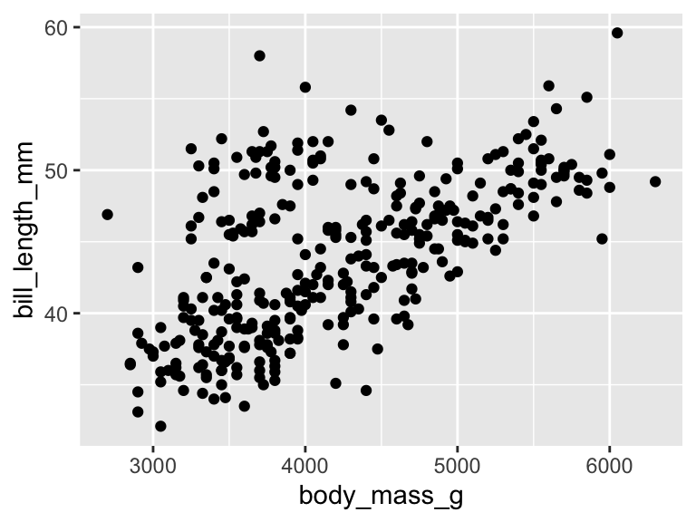
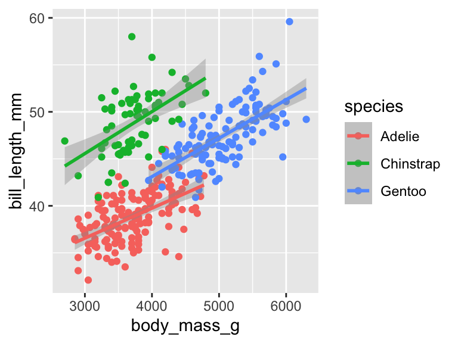
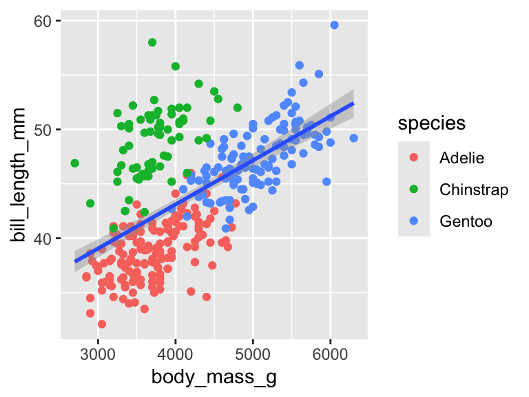

library(palmerpenguins)
library(tidyverse)I’m taking a second here to expand on this interesting little discussion on BlueSky, about where to put the aes in a ggplot.
Basically, the question boils down to:
Option A: aes inside ggplot()
penguins |>
ggplot(aes(x = body_mass_g,
y = bill_length_mm)) +
geom_point()
Option B: aes inside geom_*()
penguins |>
ggplot() +
geom_point(aes(x = body_mass_g,
y = bill_length_mm))
Option C: aes outside ggplot()
penguins |>
ggplot() +
aes(x = body_mass_g,
y = bill_length_mm) +
geom_point()
I think for most of of, Option A “looks right”. Probably this is because it’s more frequently taught that way, such as in R for Data Science.
Actually, in R4DS they also name the argument, i.e., mapping = aes(...), but that’s a whole other can of worms that I’m going to ignore for now.
Anyways, I’m going to argue for Option C for two reasons:
1. The code matches the sentence structure of the Grammar of Graphics.
Teaching the ggplot alongside the Grammar of Graphics is super fun, because it provides such a well-structured framework for students to think about a visualization problem. We’ll usually show an image like this to explain the idea of layers:

And it’s so lovely because we can say “Every time you add a new layer, you + it on to the plot!
But then when we show them the code in Option A or Option B, there’s some cognitive dissonance because the aes is not, in fact, being +’ed.
I think the most GG-consistent way to do it would be to even omit the pipe, so:
ggplot(penguins) +
aes(x = body_mass_g,
y = bill_length_mm) +
geom_point()data + mapping + geometry = consistent and clear!
2. It is easier to understand mapping inheritance.
I will wager that every single one of us who has taught ggplot to beginners has run into a question like this:
How do I color the points without making separate lines?
and their code looks like
penguins |>
ggplot(aes(x = body_mass_g,
y = bill_length_mm,
color = species)
) +
geom_point() +
geom_smooth(method = "lm")
I think this use case immediately gives both the pros and the cons of Option B:
putting aes in the geom makes it crystal clear that those two are tied to each other… but at the cost of a lot of duplication rather than inheriting a global mapping.
penguins |>
ggplot() +
geom_point(aes(x = body_mass_g,
y = bill_length_mm,
color = species)) +
geom_smooth(aes(x = body_mass_g,
y = bill_length_mm),
method = "lm")
So, to me, Option C is the best solution: we’ve already established our main mapping, and now we’re going to layer additional mappings on with geoms.
penguins |>
ggplot() +
aes(x = body_mass_g,
y = bill_length_mm) +
geom_point(aes(color = species)) +
geom_smooth(method = "lm")
Counterarguments
Just to try to anticipate a few of these…
It’s still a global mapping when it’s inside the
ggplot()function.
Sure. But I see this particular inheritance confusion SO frequently among new users that it’s clear something isn’t being understood. My guess is that this makes the global mapping look like it’s on the same “level” as the local ones, since they are both inside one level of function.
The data and the mapping are the two required elements, that’s why they both belong in the
ggplot()function.
Required in what sense? For the code to run without error you only need the dataset:
ggplot(penguins)For an interesting plot of any kind, you’d need the mapping and the geometry - nobody is proposing putting geom_*() inside of ggplot() so I don’t see why aes() should be any different.
I’m used to it that way so it looks right.
Same, friend, same.
I’ll probably be stuck in Option A for a while due to muscle memory - but I’m going to try out Option C in my teaching materials going forward and see how that goes!